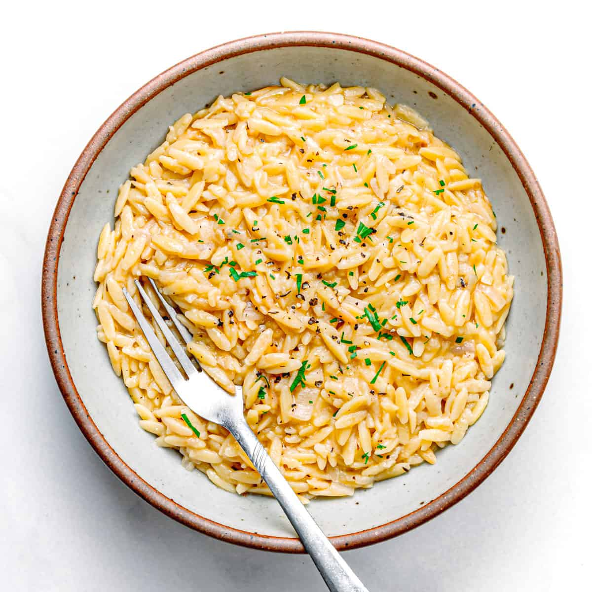

Back To Home
Orzo Risotto

A twist on the classic Risotto. We use Orzo pasta in place of rice.
Ingredients
- 8oz of dried Orzo
- 1 tbsp Beef Better Than Bouillon
- 4 cups of water, beef, or vegetable broth
- 2 tbsp butter
- 1 tbsp olive oil
- 1/2 cup shredded parmesan
- Salt, Garlic Powder, Pepper
Steps
- Mix your beef Better Than Boillon in 4 cups of water or unsalted broth. Microwave for 4 minutes. Your stock doesn't have to be hot but it should not be cold. You do not want to cool down your pan everytime you add stock to the orzo.
- Pre-heat pan on medium-high. When hot, add olive oil and orzo to pan. Sautee your orzo for 1 minute. Continuously move orzo during this step.
- Add 2 cups of your warm broth to the pan. Mix to evenly distribute liquid. Note: It is not necessary to constantly stir your risotto, despite what you have heard online. The most important thing is that you do not let your pan run completely dry.
- Occasionally stir your orzo to see if it needs more liquid. If, when you drag a spoon or plastic spatula through the center of the pan, you notice no more free liquid in the pan, you need to add another cup of stock.
- It may require less than 4 cups of stock to fully cook your orzo. Taste your food. When the orzo is soft, it is done cooking and you can stop adding liquid.
- Turn off the stove and remove pan from heat. Stir in the butter and shredded parmesan. Add salt, pepper, and garlic powder to taste.